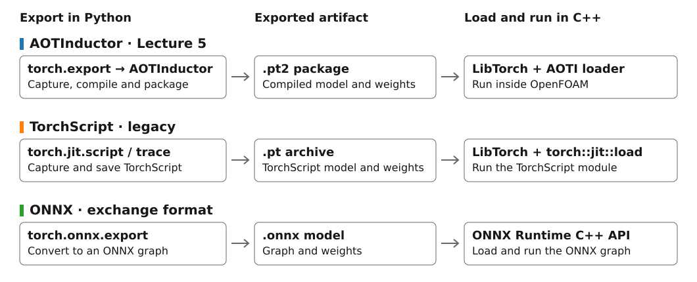
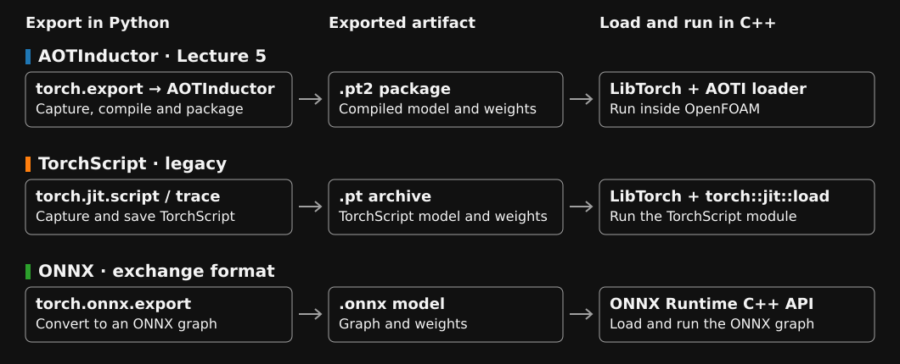
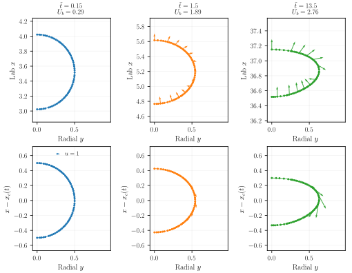
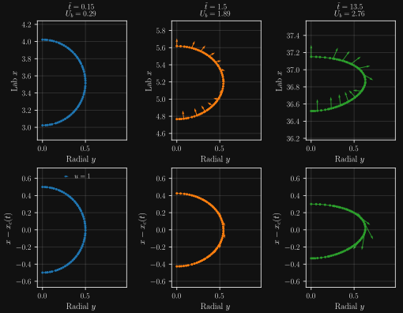
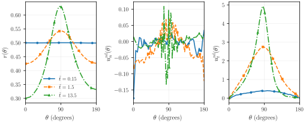

from pathlib import Path
import json
import numpy as np
import pandas as pd
import torch
from figure_style import resolve_renderer
from bubble_surrogate_tools import load_data, fit_model, check_constraints, export_models
DATA = Path("../datasets/bubble_reference")
OUTPUT = Path("output/bubble-reference")
PLOT_RENDERER = "auto" # Also accepts "latex" or "mathtext".
use_tex = resolve_renderer(PLOT_RENDERER)
SNAPSHOT_DT = .15
EPOCHS = 2500
WIDTH = 64
DEPTH = 3
LBFGS_STEPS = 40
SEED = 7
torch.set_num_threads(1)
OUTPUT.mkdir(parents=True, exist_ok=True)
log, times, interface = load_data(DATA, SNAPSHOT_DT, points_per_snapshot=64)
print(f"{len(times)} snapshots; {len(interface)} retained training/validation/test points")
print(f"Missing-velocity rows skipped while loading: {interface.attrs['nodata_rows_removed']}")
print(times.head().to_string(index=False))Bubble surrogates — from simulation data to LibTorch
Complementary code notebook for Lecture 5
This work is licensed under a Creative Commons Attribution 4.0 International License.
Learning objectives
This is a worked reproduction, to accompany the lecture and exercise. We turn Basilisk interface samples into three continuous models, verify AOTInductor export, and use the models as boundary data in an OpenFOAM liquid-only calculation. The Python cells run in order from the repository’s notebooks folder; we update DATA and OUTPUT for a different dataset, and SNAPSHOT_DT if its output cadence changes. After working through this example, we should be able to transform interface samples into bubble-frame data, fit and check the three constrained surrogates, deploy the exported models, and interpret the resulting transport fields.
1. Environment and data
Download Python source Download helper functions Download plotting helper Download data visualization helper
We use the existing Basilisk container and the current course OpenFOAM.com v2606 container. The latter already contains LibTorch 2.14.1 CPU and does not need rebuilding. Python training runs outside the container, in the course Python environment.
We start with the course Python environment active. The general course requirements already pin PyTorch to version 2.14.1.
The verified export uses PyTorch 2.14.1 with CPU tensors and a C++ compiler for ahead-of-time compilation. The container uses the matching LibTorch version. The deployment path is torch.export.export() → torch._inductor.aoti_compile_and_package() → a compiled .pt2 package → LibTorch’s torch::inductor::AOTIModelPackageLoader in C++. No Python interpreter runs inside OpenFOAM. Preprocessing, physical output scaling, and initial/symmetry constraints travel with the network. The helper contains the complete export calls; PyTorch’s AOTInductor documentation explains the deployment API.


A plain torch.export.save() archive is not a compiled deployment package. AOTInductor compiles native code for a target device/platform, so export and deployment need compatible PyTorch/LibTorch versions, C++ runtime and CPU capabilities. We use CPU float64, one thread, and AVX2 generated kernels (cpp.simdlen=256) for this example; packages are rebuilt when the deployment environment changes.
OpenFOAM solvers and boundary conditions are implemented in C++. In this example, our boundary conditions call LibTorch from C++ to evaluate the surrogate during the simulation. That is where the compiled package produced in Python connects to OpenFOAM.
C++ is a higher-level language. A compiler translates its declarations and operations into target-specific object code. Assembly describes processor instructions and object-file contents more directly. An assembler converts that text into an object file. In both routes, the linker combines the resulting object files into the shared library that LibTorch loads.
AOTInductor can emit fixed tensors, including the trained weights, as data declarations in either C++ or assembly. In the assembly route we tested, the resulting library carried a marker requesting an executable stack. The stack normally holds temporary data, such as local variables and function call information. An executable stack also permits the processor to run instructions stored there. The container’s loader rejected that request.
To produce a library that the container’s loader accepts, we set aot_inductor.use_consts_asm_build=False so AOTInductor emits the constants as C++ declarations. With the tested compiler, the resulting library loaded successfully. Both routes embed the same tensor values and use the same model computation.
Two alternatives are useful to recognize. The TorchScript route exports with torch.jit.script() / torch.jit.trace() and loads with torch::jit::load() in LibTorch; it is deprecated. ONNX uses torch.onnx.export(..., dynamo=True) and an ONNX runtime such as ONNX Runtime in C++; it offers a framework-independent exchange format but requires that separate runtime. Neither alternative is needed to run this worked example.
Reuse the reference data or run Basilisk
For the quickest start, we download the compact reference data and extract the archive into datasets/ from the repository root. It creates datasets/bubble_reference/. This teaching subset retains the original solver log, 64 valid angle-ordered interface points per snapshot, and Basilisk’s missing-value records. No values are fitted or synthesized. provenance.json records the source, settings, and sampling. MPI records are merged into one packaged file per snapshot. The Basilisk recipe below regenerates the full interface output.
python -m zipfile -e downloads/bubble-reference-data.zip datasetsTo regenerate the data, we keep the existing solver and Basilisk image. From the repository root:
mkdir -p exercises
cp -r test_cases/basilisk_solver exercises/bubble-reference
apptainer shell basilisk.sif
# The remaining commands run inside the Basilisk container.
cd exercises/bubble-reference
make
mkdir reference
cd reference
mpirun -np 4 ../bubble 14 15 0.4361 238.2 > log.solver 2>&1
exitThe arguments are refinement level, final dimensionless time, Eötvös number, and Galilei number. For this solver, snapshots are written every endTime/100, so the run above uses SNAPSHOT_DT = 0.15. We keep each run in a separate folder. A short pilot with lower refinement is useful for checking the setup, but its data are not a resolution reference.
What the files mean
The log has nine numeric columns: time, volume, center position (x,y,z), center velocity (ux,uy,uz), and area. Solver/MPI messages are skipped. In the axisymmetric Basilisk output, x is vertical and y is radial. Each plic/points_XXXXXX_nYYY.txt stores position, interface normal, and liquid velocity as six columns; all MPI files for a snapshot are concatenated. Empty processor files are skipped.
The archived log can end one solver step before its final interface snapshot. We interpolate center position and velocity; at that last endpoint, the last log value is used only within one typical log step. A larger discrepancy raises an error. When Basilisk cannot interpolate a velocity at an interface point, it writes a missing-value marker (approximately \(10^{30}\)). This marker indicates an unavailable sample, not a physical velocity. The data loader skips marked rows before training.
2. Features, targets, and independent snapshots
We subtract the bubble’s center position and rise speed before constructing polar coordinates and projecting the liquid velocity. We orient each measured normal from gas into liquid; the increasing-angle tangent in Basilisk coordinates is \(\mathbf{t}_\Sigma=(-n_y,n_x)\). Thus the target is the tangential liquid velocity in the translating frame, not velocity relative to the deforming mesh.
We sample at most 64 angle-ordered points per snapshot so snapshots with more PLIC records do not dominate merely through their point count. Complete snapshots are split into training, validation, and test sets: indices ending in 5 are test snapshots, other multiples of 5 are validation snapshots, and all remaining snapshots are used for training. This tests temporal interpolation within one bubble case, not generalization to unseen bubble properties. Test snapshots never select weights or output scaling.
All quantities remain in the Basilisk nondimensionalization: \(d_b=1\), \(r_0=0.5\), velocity scale \(\sqrt{g d_b}\), and time scale \(\sqrt{d_b/g}\). In the liquid-only case, the coordinate axes rotate to vertical y and radial x; angles and scalar predictions are unchanged. The OpenFOAM dictionaries use these same numerical scales. We do not insert dimensional seconds into a dimensionless trained model.
From Cartesian samples to interface coordinates
We inspect three actual snapshots: early startup at \(\tilde t=0.15\), acceleration at \(1.5\), and late, approximately steady rise at \(13.5\). In Basilisk, \(x\) is vertical and \(y\) is radial. The upper row shows laboratory-frame positions and liquid velocity vectors; the lower row subtracts \(x_c(t)\) from position and \(U_b(t)\) from vertical velocity. Both rows use the same arrow scale and equal geometric aspect ratio. Only the nonnegative radial half-plane was simulated; these interfaces are not mirrored.


We compute \(r=\sqrt{(x-x_c)^2+y^2}\) and \(\theta=\operatorname{atan2}(y,x-x_c)\), where \(\theta=0\) is the top and \(\pi\) the bottom. The plots and data columns use \(\theta\) for the same polar angle denoted \(\vartheta\) in the lecture. The translated liquid velocity is projected onto the measured interface normal and tangent: \(u_n^{\mathrm{rel}}=\mathbf u^{\mathrm{rel}}\cdot\mathbf n_\Sigma\) and \(u_t^{\mathrm{rel}}=\mathbf u^{\mathrm{rel}}\cdot\mathbf t_\Sigma\). For a deformed bubble these directions differ from the radial/angular basis of a circle.


These are sampled CFD data: no regression or smoothing is applied. The small normal component is visibly noisy, illustrating why boundary motion is obtained consistently from the radius rather than a second fitted normal-velocity model. Normal velocity is measured relative to translation, not relative to the deforming interface; it need not vanish during deformation. The same at-most-64 angle-ordered samples used by training are shown. The compact archive is already a teaching subset of the full PLIC output.
from bubble_data_figures import save_data_transforms
_ = save_data_transforms(DATA, OUTPUT / "data-transforms", snapshot_dt=SNAPSHOT_DT, use_tex=use_tex)3. Three small constrained networks
Each network has three tanh hidden layers with 64 units per layer. The rise-speed model receives time; the other models receive time and \(\cos(\vartheta)\). Normalization and constraints are implemented by BubbleModel in the linked helper. With \(T\) the last available snapshot time, we use
\[q(t)=\frac{\log(1+t)}{\log(1+T)},\qquad s(t)=\frac{t}{1+t},\]
\[\widehat U_b=S_U s(t)f_U(q(t)),\qquad \widehat r=r_0+S_r s(t)^2f_r(q(t),\cos(\vartheta)),\qquad \widehat u_t=S_t s(t)\sin(\vartheta)f_t(q(t),\cos(\vartheta)).\]
These are the same three prediction functions used in the lecture. The bounded startup factor helps conditioning over a long trajectory; its squared form also makes the initial deformation velocity zero. The logarithm resolves early-time changes more evenly. This transformation uses nondimensional, nonnegative time. Output scales \(S\) come from training targets only. Neither positive radius nor constant volume is guaranteed by these factors; we check them before deployment.
We minimize scaled MSE with 2500 Adam updates, then refine with 40 L-BFGS blocks of up to 20 iterations each. We retain the weights with the lowest validation loss across both stages. Smooth tanh networks are useful because the boundary-motion model is differentiated. A small test RMSE alone does not establish accurate mass transfer: shape derivatives, near-wall velocity, mesh resolution, and conservation also matter.
models, histories, metrics = {}, {}, []
for target, frame in (("ub", times), ("r", interface), ("ut", interface)):
models[target], histories[target], result = fit_model(
target, frame, times.t.max(), epochs=EPOCHS, width=WIDTH, depth=DEPTH,
lbfgs_steps=LBFGS_STEPS, seed=SEED)
metrics.append(result)
check_constraints(models, times.t.max())
print(pd.DataFrame(metrics).to_string(index=False))
(OUTPUT / "training.json").write_text(json.dumps(metrics, indent=2))Inspect predictions before using them as boundary data
The diagnostic panels compare data and predictions; the surface profiles use a held-out snapshot. All errors are in the original dimensionless units. Training/validation history is scaled MSE. Its horizontal axis counts recorded validation checkpoints (every ten Adam steps, then once per L-BFGS block), rather than epochs. The saved figure pair below is a worked example from the supplied reference dataset; running the cell creates the corresponding figures for your own settings in OUTPUT.
from bubble_surrogate_figures import save_diagnostics
save_diagnostics(models, histories, times, interface, OUTPUT / "diagnostics", use_tex=use_tex)

Worked reference reproduction, not new CFD validation. The angular panels use the same held-out snapshot in both themes. A different run will generate its own diagnostics.
For the reference fit, the maximum volume discrepancy against the recorded trajectory is about 0.031%. The initial-shape, initial-derivative, pole, symmetry, and export checks also pass.
# Axisymmetric volume: V = (2*pi/3) integral_0^pi r(theta)^3 sin(theta) dtheta.
angle = np.linspace(0, np.pi, 401)
checks = []
for time in np.linspace(0, times.t.max(), 31):
features = torch.tensor(np.column_stack((np.full_like(angle, time), angle)))
with torch.no_grad():
radius = models["r"](features).numpy().ravel()
volume = 2*np.pi/3 * np.trapezoid(radius**3*np.sin(angle), angle)
reference_volume = 2*np.pi*np.interp(time, log.t, log.v)
checks.append((time, radius.min(), volume/(4*np.pi*.5**3/3)-1,
volume/reference_volume-1))
geometry_checks = pd.DataFrame(checks, columns=["time", "minimum_radius", "relative_volume_drift",
"relative_volume_error_against_data"])
print(geometry_checks.describe().to_string())
assert geometry_checks.minimum_radius.min() > 0A radius that is positive can still produce a bad mesh or excessive volume drift. We inspect these diagnostics, compare with the original bubble volume (the axisymmetric Basilisk log volume is multiplied by \(2\pi\) to obtain the full three-dimensional volume), and refine the fit or constrain the geometry when needed. We do not silently rescale the learned shape after training: that would change the boundary motion and require consistent velocities.
4. Export and check AOTInductor packages
All compiled models use float64 input and output with a variable batch dimension. The exchange contract is deliberately small:
| File | features |
prediction |
|---|---|---|
ub.pt2 |
[N,1]: time |
[N,1]: rise speed |
r.pt2 |
[N,2]: time, angle in radians |
[N,1]: radius |
ut.pt2 |
[N,2]: time, angle in radians |
[N,1]: signed tangential velocity |
The positional tensor input/output, scaling, and constraints are embedded in the exported model. contract.json records the domain and versions. A single model is valid for its trained bubble properties; changing Eötvös/Galilei numbers requires new data and a new fit, not changing a dictionary while reusing the old weights.
export_checks = export_models(models, OUTPUT, times.t.max())
print(export_checks.to_string(index=False))The compiled AOTInductor packages and eager PyTorch are compared at batch sizes 1, 7, and 101, using both early and late times and the signed full-meridian angular extension. The check uses relative tolerance \(10^{-9}\) and absolute tolerance \(10^{-10}\). Export agreement does not measure agreement with CFD. We retain both tests separately.
The packages expect contiguous row-major float64 inputs. The C++ boundary helper supplies this layout. When evaluating a compiled package directly in Python, we call tensor.contiguous() on input assembled from a table or tensor view.
The existing v2606/LibTorch 2.14.1 CPU container was checked with the actual C++ loader at all three batch sizes: maximum absolute discrepancy was \(1.8\times10^{-15}\). The three boundary libraries compiled and a 640-cell serial startup run reached \(t=0.03\), wrote all three species fields, and passed the moved-mesh check. This verifies loading/coupling, not long-time stability or transport convergence.
5. Build and run the liquid-only case
The complete OpenFOAM example archive and its source notes contain the complete solver, boundary conditions, and case. The three boundary conditions load their compiled packages once, use one CPU thread, and evaluate all patch locations in one batch. Mapped/copied patch fields share their loaded package. The displacement model defines the inner-boundary shape. Tangential speed is predicted directly; normal fluid velocity comes from the discrete mesh flux, following v2606’s movingWallVelocity, so boundary motion and liquid flux stay consistent.
Basilisk uses vertical x, the OpenFOAM wedge uses vertical y, and the lecture writes the rise direction as \(\mathbf{e}_z\). All three measure the polar angle from the upward axis. The CFD patch normal on the liquid domain points into the void; it is opposite to the gas-to-liquid normal used in the lecture. Its signed projection is handled inside the boundary condition. We do not learn a second independent normal-velocity model. The frame-acceleration force is absorbed into reduced pressure; the far-field pressure/velocity treatment is assessed as part of the flow comparison.
From the repository root, after exporting the models:
source setup-env
export MODEL_DIR="$ML_CFD_BASE/notebooks/output/bubble-reference"
mkdir -p exercises
cp -r test_cases/single_phase_approach exercises/bubble-single-phase
apptainer run "$ML_CFD_IMAGE" bash -c \
'cd exercises/bubble-single-phase && ./compile.sh && cd simulation && ./Allrun'The recipes use wmake libso for the boundary libraries and wmake for the solver. Compiled files stay in this example’s build/ folder. The boundary libraries link to the container’s LibTorch using TORCH_LIBRARIES=/opt/libtorch. Only these libraries select C++20, as required by this LibTorch release; global OpenFOAM compiler rules and the installation are unchanged. The Basilisk image stays unchanged.
We start with the supplied serial liquid-only case. The supplied case uses the 13,584-cell mesh with 132 bubble faces and milder interface-normal grading tested in the stability run. Its default end time is 3. The highest-Schmidt concentration layer still warrants a mesh refinement check. For a quick startup check, we can shorten endTime in the copied case; a successful short run checks loading and coupling, not late-time accuracy. Allrun refuses to overwrite an existing 0 folder, so a fresh copy is used for each comparison. The build can be repeated without deleting all objects.
Computed deformation and concentration transport
The animations show OpenFOAM fields from the AOTInductor and LibTorch workflow. The three panels have the same bubble and velocity field at each time: only the diffusion coefficient changes, giving \(Sc=100\), \(1000\), and \(10000\). The Reynolds number varies during startup, with \(Re(t)=Ga\,\widehat U_b(t)\) and \(Ga=238.2\) in this dimensionless case.
Actual cell-associated concentration, on a common fixed scale from 0 to 1. This near-bubble meridional view is reflected by axisymmetry. The interface outline follows the moving mesh; the gas interior is excluded from the liquid calculation.
Actual mesh cells, with a close-up following the interface near a polar angle of \(45^\circ\). The local axes are tangential distance \(s\) and outward normal distance \(n\); the view translates and rotates, without stretching the geometry. Cell colors show \(Sc=1000\), with no cell-to-point smoothing.
The displayed run is a separate 132-face case with four MPI ranks from startup. The animation recipe records its settings. The animations use 200 saved snapshots from \(0.05\leq\tilde t\leq10\) on a 13,584-cell mesh with 132 faces along the bubble and milder interface-normal grading. The mesh close-up shows that the steep concentration change at \(Sc=1000\) occupies only a few cells normal to the interface. The layer is thinner still at \(Sc=10000\). This limited resolution makes the interfacial gradient and Sherwood numbers sensitive to mesh spacing. A refinement study is needed to establish mesh convergence.
6. Inspect concentration transport
The species fields s1, s2, and s3 share the same liquid velocity and use \(Sc=100\), \(1000\), and \(10000\). The case runs Allpost after the flow calculation. We can also run it on a selected interval of saved results.
# From the simulation folder in the course container
./Allpost -time '0.05:10'OpenFOAM creates three derived Sherwood fields and evaluates snGrad(s1), snGrad(s2), and snGrad(s3) on the bubble patch with setExprBoundaryFields. With \(d_b=1\) and \(\Delta c=c_\Sigma-c_\infty=1\), these signed normal gradients are the local Sherwood numbers. For dimensional data, the conversion is
\[Sh_{\mathrm{local},f}=\frac{d_b}{\Delta c}\left(\nabla c\cdot\mathbf n_{\mathrm{liquid}}\right)_f.\]
The liquid-domain outward normal points into the bubble, so dissolution gives positive values. The sherwood function object writes the local values and face centres as text tables. It also computes the global Sherwood number directly in OpenFOAM using areaAverage, which sums \(A_f Sh_{\mathrm{local},f}\) over the bubble and divides by the total bubble area. The global history comes from postProcessing/sherwood/.../surfaceFieldValue.dat. The Python plotting workflow reads both sets of tables.
Local Sherwood profiles for the three Schmidt numbers


The local values are plotted at the face-centre angles from the top (\(0\)) to the bottom (\(180\) degrees). The local profiles share a linear vertical scale. The area-weighted mean histories use a logarithmic vertical scale. Lines join face samples without smoothing. The downloadable tables retain all 200 times and 132 bubble faces per time. The mean histories use the area averages written by OpenFOAM. The generators are scripts/extract_bubble_sherwood.py and scripts/plot_bubble_sherwood.py.
These diagnostics use the same OpenFOAM run as the animations, on the 13,584-cell mesh through \(\tilde t=10\). The highest-Schmidt layer is not mesh-converged, so these are computed diagnostics rather than validated transfer correlations. The exercise asks us to repeat the calculation on a finer mesh before interpreting transfer-rate differences. The supplied case enables limitFields in system/controlDict, which clamps the concentrations to \([0,1]\). The animation case disables this function object so numerical overshoots remain visible.